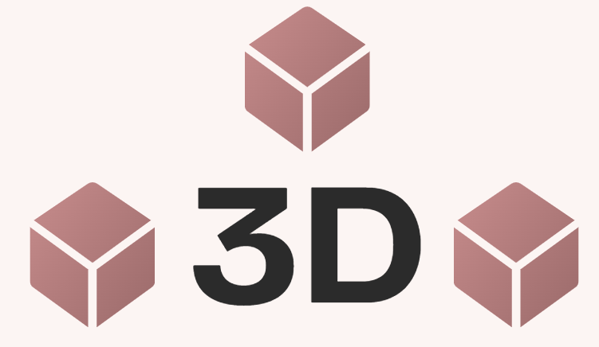

Travailler en 3D est un nouveau défi pour moi, et chaque projet me permet d'explorer davantage les possibilités de cette technologie. Bien que je ne connaissais pas la 3D au début, étant une personne passionnée par le dessin, j'ai rapidement trouvé un lien avec ce domaine. Dès mes premiers pas en 3D, j'ai accroché et je suis désormais impatiente d'explorer plus en profondeur cet univers. Vous trouverez quelques-uns des projets que j'ai réalisés durant ma formation.
Cliquez pour en savoir plus.
Cliquez pour en savoir plus.

×